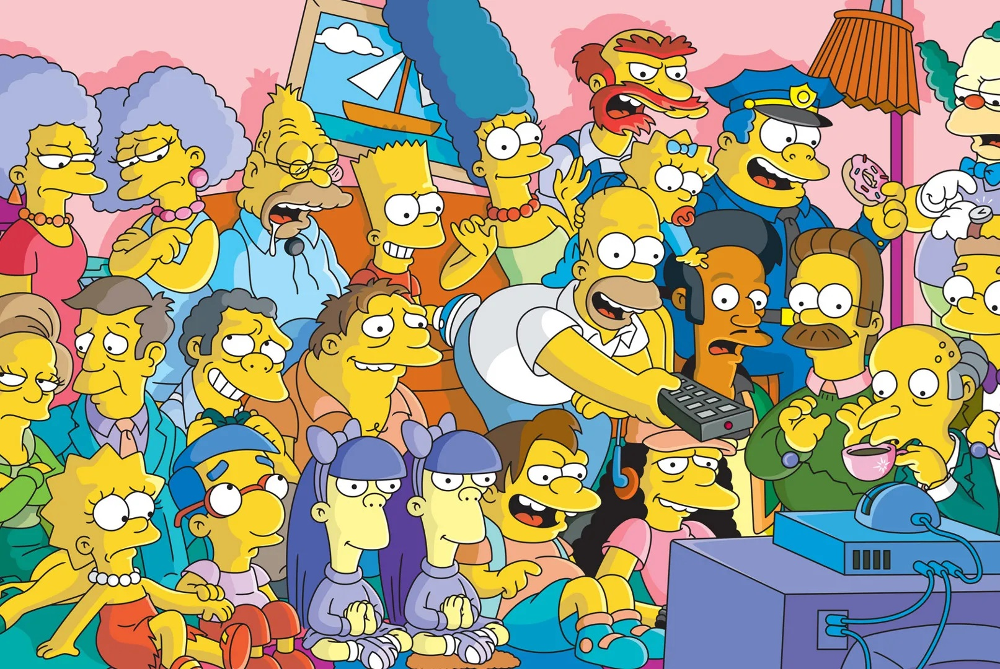
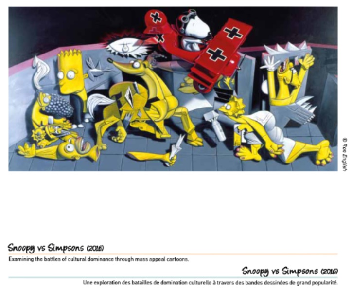
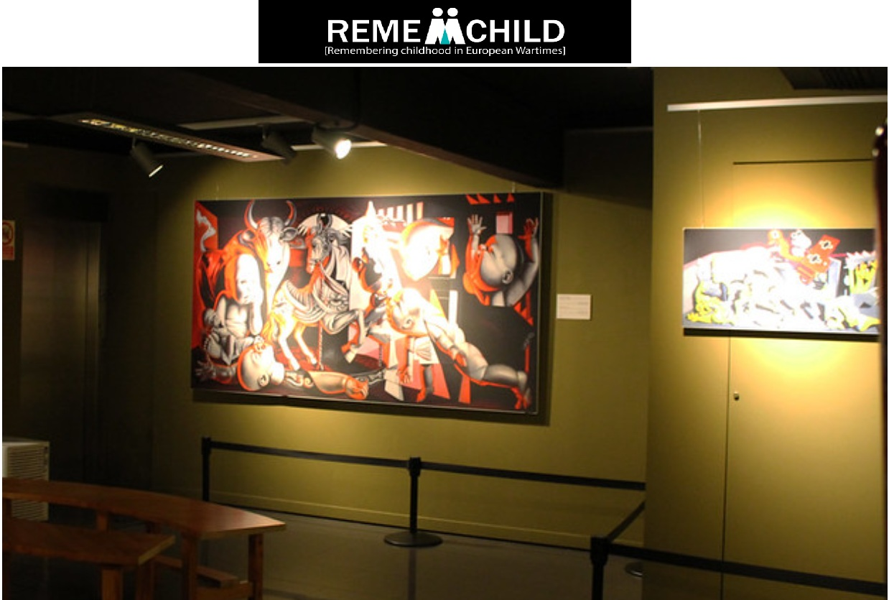
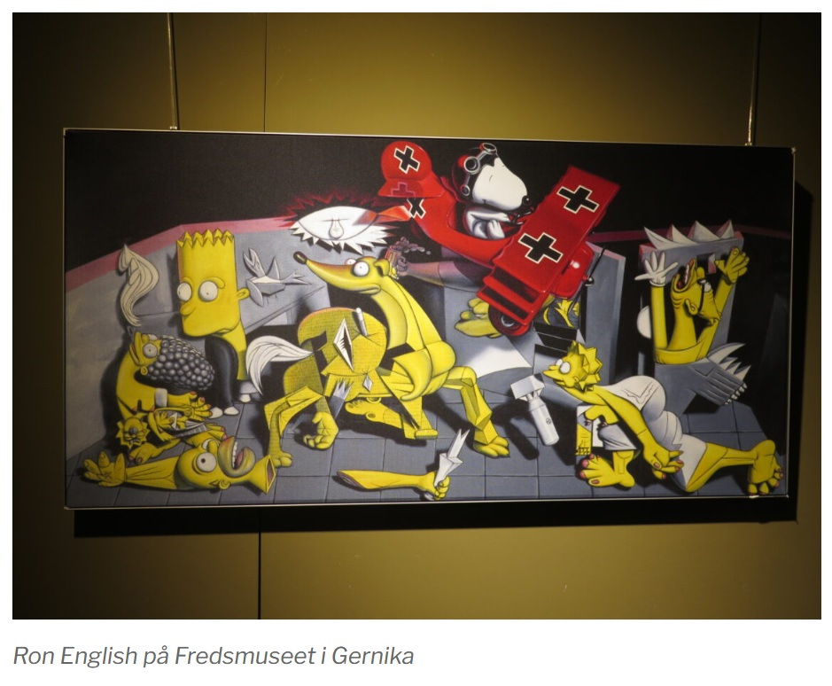

Exhibitions
Ron English Exhibition, Arte Vista The Pop-Art Gallery, Badhoevedorp, Netherlands, March 27–28, 2005.
Reimagining “Guernica” / La réinvention du “Guernica”, Museo de la Paz de Gernika, Gernika-Lumo, Bizkaia, Spain, April 4–December 10, 2017; the composition was presented as a print on stretched canvas, not as the original painting.
Literature
Ron English, Abject Expressionism: The Art of Ron English (San Francisco: Last Gasp, 2007), p. 104. ISBN 978-0867196894.
Ron English, Ron English’s Stickable Art Offenses: A Sticker Book, designed by Randy Johnson (San Francisco: Last Gasp, 2011), 100 pp., ISBN 978-0867197594.
Museo de la Paz de Gernika, Reimagining “Guernica” / La réinvention du “Guernica” (Gernika-Lumo: Museo de la Paz de Gernika, 2017), digital exhibition catalogue / flip-book, available here, accessed April 5, 2026.
Notes
Also known as Snoopy Bombarding the Simpsons Guernica.
This work references Pablo Picasso’s Guernica.
This work references Snoopy, the Peanuts character created by Charles M. Schulz.
This work references characters from The Simpsons.
The composition was reproduced as a poster.
The work is documented in the Museo de la Paz de Gernika’s digital exhibition catalogue / flip-book for Reimagining “Guernica” / La réinvention du “Guernica”.
Ancillary Documentation
The following materials document the visual/art-historical reference, cartoon-character source references, poster reproduction, Museo de la Paz de Gernika catalogue documentation, REMEMCHILD project documentation, and travel-site documentation.







Selected Online Circulation
Selected examples of the work’s online circulation, reproduction, or discussion. This list is not exhaustive; it is intended to document representative appearances of the image beyond formal exhibition and publication records.